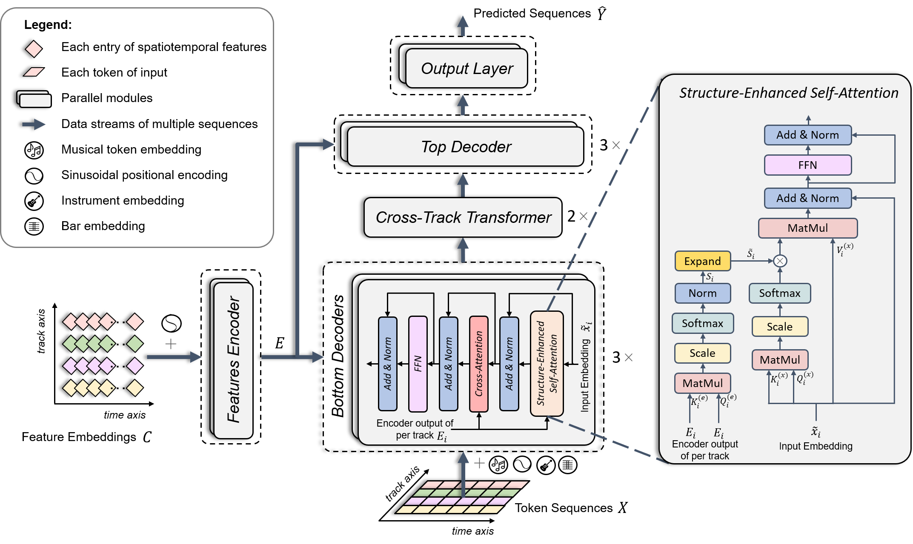

BandControlNet: Fine-Grained Spatiotemporal Features for Steerable Popular Music Generation
1. Abstract
Controllable music generation promotes the interaction between humans and composition systems by projecting the users' intent on their desired music. The challenge of introducing controllability is an increasingly important issue in the symbolic music generation field. When building controllable generative popular multi-instrument music systems, two main challenges typically present themselves, namely weak controllability and poor music quality. To address these issues, we first propose spatiotemporal features as powerful and fine-grained controls to enhance the controllability of the generative model. In addition, an efficient music representation called REMI_Track is designed to convert multitrack music into multiple parallel music sequences and shorten the sequence length of each track with Byte Pair Encoding (BPE) techniques. Subsequently, we release BandControlNet, a conditional model based on parallel Transformers, to tackle the multiple music sequences and generate high-quality music samples that are conditioned to the given spatiotemporal control features. More concretely, the two specially designed modules of BandControlNet, namely structure-enhanced self-attention (SE-SA) and Cross-Track Transformer (CTT), are utilized to strengthen the resulting musical structure and inter-track harmony modeling respectively. Experimental results tested on two popular music datasets of different lengths demonstrate that the proposed BandControlNet outperforms other conditional music generation models on most objective metrics in terms of fidelity and inference speed and shows great robustness in generating long music samples. The listening tests performed as subjective evaluation show comparable results on datasets with short samples to state-of-the-art while outperforming significantly on a longer dataset.2. The Architecture of BandControlNet
3. Generated Samples
Sample-1: Reference
Sample-1: FIGARO
Sample-1: BandControlNet
Sample-2: Reference
Sample-2: FIGARO
Sample-2: BandControlNet
Sample-3: Reference
Sample-3: FIGARO
Sample-3: BandControlNet
The MIDI Web Player is provided by html-midi-player
4. Contact
For reaching me by email, please use: chinglohsiu[AT]gmail.com or visit my Homepage.